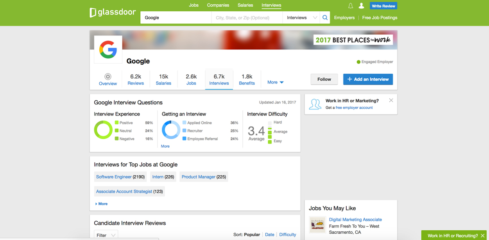

Effective User Interface
I used glassdoor on daily basis because I like to look up at different companies and compare their salary and benefits. I also use glassdoor to help me prepare my coming up interviews because its effective user interface allows me to find what I need immediately. The UI provides a useful nav bar which has different tabs that direct me to specific pages. The statistic graphs also give me an overview on the company with filtered tags that organized different job positions. I also like how glassdoor divides different information into individual sections which prevent information from overwhelming users. The overall interface design turn the website into a web application where user customize different functions and set up preference. The consistency of the design is also highly standarded, for examples, the font size and color.